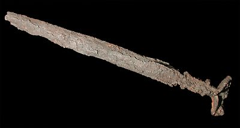

The Challenge -
Iron sword

Iron became an important metal after 1000 B.C. when people in the Near East understood how to make it into objects like this. Iron is stronger than copper or bronze and so makes very good weapons. Assyrian kings were always keen to send their armies into the mountains to obtain supplies of iron.
To learn more about weapons like this visit the Warfare Challenge.
|
|